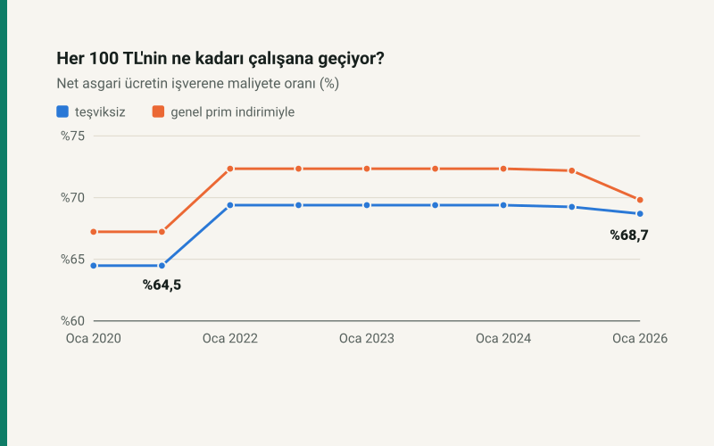

Kısa cevap
İşverenin ödediğiyle çalışanın aldığı arasındaki fark prim ve vergidir. 2022'ye kadar asgari ücretten gelir ve damga vergisi kesilir, AGİ ile kısmen geri verilirdi; 2022'den beri asgari ücret iki vergiden de istisna. Fark o yıldan beri yalnız primlerden oluşuyor.
Payın 2025 ve 2026'da hafifçe düşmesinin sebebi işveren primi: kısa vadeli sigorta Eylül 2024'te %2'den %2,25'e, malullük primi 2026'da bir puan arttı.
Dönem dönem
| Dönem | Brüt | Net | Maliyet, teşviksiz | Maliyet, indirimli | Nete geçen pay | Reel maliyet |
|---|---|---|---|---|---|---|
| Ocak 2020 | 2.943,00 TL | 2.324,71 TL | 3.605,18 TL | 3.458,02 TL | %64,48 | 34.623 TL |
| Ocak 2021 | 3.577,50 TL | 2.825,90 TL | 4.382,44 TL | 4.203,56 TL | %64,48 | 36.615 TL |
| Ocak 2022 | 5.004,00 TL | 4.253,40 TL | 6.129,90 TL | 5.879,70 TL | %69,39 | 34.446 TL |
| Temmuz 2022 | 6.471,00 TL | 5.500,35 TL | 7.926,98 TL | 7.603,42 TL | %69,39 | 33.962 TL |
| Ocak 2023 | 10.008,00 TL | 8.506,80 TL | 12.259,80 TL | 11.759,40 TL | %69,39 | 43.692 TL |
| Temmuz 2023 | 13.414,50 TL | 11.402,32 TL | 16.432,76 TL | 15.762,04 TL | %69,39 | 47.624 TL |
| Ocak 2024 | 20.002,50 TL | 17.002,12 TL | 24.503,06 TL | 23.502,94 TL | %69,39 | 52.969 TL |
| Ocak 2025 | 26.005,50 TL | 22.104,67 TL | 31.921,75 TL | 30.621,48 TL | %69,25 | 48.557 TL |
| Ocak 2026 | 33.030,00 TL | 28.075,50 TL | 40.874,63 TL | 40.214,03 TL | %68,69 | 47.585 TL |
İndirimli maliyet Ocak 2025'e kadar 5, Şubat 2025'ten 4, 2026'da 2 puan indirimle hesaplandı; imalatta indirim 5 puan kaldı. 2020 ve 2021'de net yıl içinde düşer (AGİ yılları); tablo ocak ayını gösterir.
Reel olarak
Ağustos 2026 fiyatlarıyla işverenin asgari ücretli için ödediği aylık tutar Ocak 2024'te 52.969 TL ile zirve yaptı. Ocak 2026'da 47.585 TL; zirvenin %10 altında. Temmuz 2022'deki 33.962 TL dönemin en düşüğü. Asgari ücretin çalışan açısından reel seyri için: asgari ücret enflasyona yenildi mi?
Bir düzeltme notu
Bu hesaplar sırasında sitenin bordro motorunda 2026 işveren payının bütün yıllara yazıldığı görüldü; 2020–2025 maliyetleri 1–1,25 puan yüksek çıkıyordu. Tablo düzeltilmiş oranlarla hesaplandı; kayıt yayın ilkelerinde.
Kendi çalışanınız için: işveren maliyeti hesaplama.
Kaynaklar
- Asgari Ücret Tespit Komisyonu kararları, 2020–2026 (Resmî Gazete); ÇSGB asgari ücretin işverene maliyeti tabloları.
- 5510 sayılı Kanun m.81 ve m.82; 7524, 7538 ve 7566 sayılı Kanunlar.
- 193 sayılı Gelir Vergisi Kanunu m.23/1-(18) (7349 sayılı Kanunla 2022'den itibaren asgari ücret istisnası).
Tablo sitenin bordro motorundan üretilir; asgari ücret ay ay kendi dönemiyle hesaplanır ve net, resmî net asgari ücretle otomatik testte karşılaştırılır. Reel değerler aylık TÜFE ile.
Sık sorulan sorular
Asgari ücretin işverene maliyeti 2026'da ne kadar?
Teşviksiz 40.874,63 TL; imalat dışı 2 puan indirimle 40.214,03 TL, imalatta 5 puanla 39.223,13 TL.
İşverenin ödediğinin ne kadarı asgari ücretliye geçiyor?
2026'da teşviksiz maliyetin %68,69'u. 2021'de %64,48'di; 2022'deki vergi istisnasıyla %69,39'a çıktı.
Asgari ücretin işverene maliyeti reel olarak arttı mı?
Ağustos 2026 fiyatlarıyla Ocak 2020'de 34.623 TL, Ocak 2024'te 52.969 TL, Ocak 2026'da 47.585 TL.